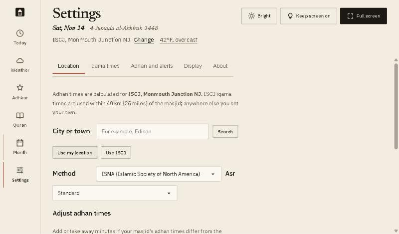

Chapter 2
Your location and times
IqamaHub works out the adhan times for wherever this device is. Tell it where that is once, and it does the rest every day.
The first time you open the app
The app starts with times for the town your internet connection is in. This is only a rough guess, so a note at the top of the Today screen asks you to check it. Pick one:
- Exact location asks the device where it is. Say Allow when the browser asks.
- Search a city lets you type your town instead.
- Keep this place keeps the town shown and hides the note.
If the app cannot tell where you are, the note asks you to set your location, and the prayer times appear once you have.
You can change this at any time: tap Change next to the place name at the top of any screen, or open Settings › Location.
Settings › Location
On a phone, Settings opens on a list of its five sections, each showing what it is set to now. Tap one to open it; ‹ or Settings above its title takes you back to the list. On a tablet or TV the sections are a row of tabs instead. On a phone you can also swipe sideways inside a section to go to the next or previous one.


- City or town. Type your town, tap Search, and pick it from the list.
- Use my location sets it from the device’s location. Use my approximate location uses the town your internet connection is in, without asking the device.
- Method is how the adhan times are worked out. There are 22 to choose from. ISNA (Islamic Society of North America) is the usual one in the US and Canada. Pick the one your masjid uses.
- Asr: Standard, or Hanafi for the later Asr time.
- Adjust adhan times moves any prayer by up to 30 minutes, if your masjid’s adhan differs from the calculation. Tap − for earlier or + for later (hold to go faster), or type the number of minutes. Reset all to 0 undoes it.
The Hijri date
Further down the same page:
- Hijri date follows the Umm al-Qura calendar. If your local moon sighting is a day or two different, choose 1 day earlier, 1 day later and so on.
- Start the Hijri day at Maghrib. The Islamic day begins at sunset. Turn this on and the Hijri date moves to the next day after the Maghrib adhan. With it off, the date changes at midnight.
Good to know
- Within 10 miles (16 km) of a masjid the app knows, it uses that masjid’s own iqama times. Anywhere else you set your own iqama times, in chapter 4.
- Prayer times are worked out on this device. Your place is only sent out to fetch the weather. Chapter 10 lists everything the app sends.